Spark driver JVM: where application decisions are made
component index
In a classic PySpark application, orders.py runs in a Python process.
The driver JVM holds the live SparkContext, SQL plans, schedulers,
and executor registrations. "Driver" names a process role, not a class to instantiate.
The JVM schedules Spark tasks; YARN grants containers, and executors run the tasks.
This is not a Spark Connect client/server deployment.
Flow at a glance
- Executor: Registers with the driver and signals it is ready.
- Driver JVM: Sends a task to the executor over Spark RPC.
- Driver backend: Frees the task's cores on its final status update.
Key distinction: YARN grants the container; the driver decides which tasks its executor runs.
Show the animated flow

Placement: which process must stay alive?
| YARN deploy mode |
JVM that owns the driver |
How the AM finds it |
| Cluster |
The AM JVM in the AM container. A thread in that JVM invokes deploy.PythonRunner.main; the script is a child process in the same container. The submit client is not the driver. |
No network discovery is needed to obtain the context: the cluster scheduler hands the AM the actual SparkContext object. The AM uses its bound RPC address. |
| Client |
The submit-side JVM on the client host. Its Python child also stays there. The AM in YARN is a separate JVM that launches executors, not a backup driver. |
The driver backend passes host:port as an AM argument. The AM resolves the driver's YarnScheduler endpoint through Spark RPC. |
Follow the launch from SparkSubmit (client, cluster)
to the AM user thread, or follow the client-mode address from the
submitting backend to the separate AM.
From startup to shutdown
- Publish the driver. The JVM launcher starts the local
Py4J gateway and the Python child. When the script requests a
context, its JVM constructor installs the driver's SparkEnv and
initializes the schedulers. A running Python interpreter alone does
not imply a ready driver.
- Coordinate with YARN. In cluster mode the scheduler hook calls
sparkContextInitialized(sc), which completes a promise and waits.
The AM thread obtains sc.env.rpcEnv, reads the actual host and port,
registers with the ResourceManager, creates the allocator, and resumes the waiting
call. In PySpark the PythonRunner thread is waiting for its child; the context
constructor runs on the JVM side of the Py4J call. In client mode the already-listening
driver instead submits and waits for the YARN application to run.
- Accept executors and dispatch work. An executor sends
RegisterExecutor(id, executorRef, host, cores, ..., resourceProfileId). On
acceptance the driver records the endpoint and resources and replies true;
LaunchedExecutor(id) makes those cores available for offers. A distributed action
drives the JVM schedulers. The driver backend
encodes each chosen TaskDescription into LaunchTask. An incoming
StatusUpdate goes to the task scheduler; a terminal update releases that
task's resources. Neither message goes through Python or the ResourceManager.
- Finish two lifetimes.
spark.stop() stops the context; it does not exit
the Python script. The runner waits for the child exit and closes its gateway.
In cluster mode the AM user thread translates a normal return or a SparkUserAppException
into a finish request. Before AM registration, finish records a
context-initialization failure instead of preserving a user exit code.
Flowchart · Open full sizeText equivalent
flowchart LR
P["Python driver process"] <-->|"local Py4J: API calls and replies"| D["Driver JVM: context and schedulers"]
D <-->|"Spark RPC: register, launch, report"| E["Executor JVM"]
A["AM resource allocator"] <-->|"YARN container requests and grants"| R["ResourceManager"]
A -.->|"Driver reference: same JVM in cluster mode, remote in client mode"| DDiagnostic: no executor logs yet
If a cluster-mode script blocks before getOrCreate(), the AM can report
Timed out waiting for SparkContext. It started the user application but
has not reached allocator creation. Read the AM container's Python output and JVM logs,
not executor logs. spark.yarn.am.waitTime bounds that wait; increasing it
only helps if the pre-context work will finish.
If the JVM itself dies, its in-memory context and scheduler state are lost. A
YARN retry, when granted in cluster mode, starts a fresh AM/driver and
reruns the script; it does not resume the previous Python stack. A managed client-mode AM
handles driver disconnect by finishing, not by recreating the client driver.